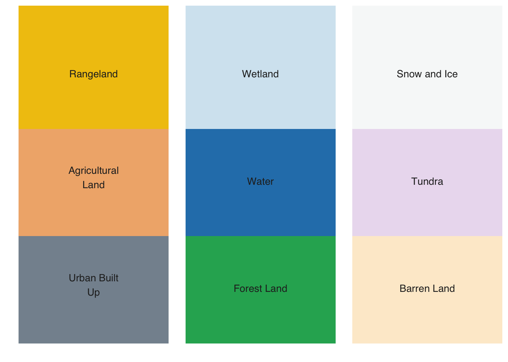

library(sits)
library(sitsdata)
tempdir_r <- "~/sitsbook/tempdir/R/intro_visulization"
dir.create(tempdir_r, showWarnings = FALSE)3 Data visualisation in SITS
This Chapter contains a discussion on plotting and visualisation of data cubes in sits.
Configurations to run this chapter
3.1 Plotting
The plot() function produces a graphical display of data cubes, time series, models, and SOM maps. For each type of data, there is a dedicated version of the plot() function. See ?plot.sits for details. The plotting of time series, models, and SOM outputs uses the ggplot2 package; maps are plotted using the tmap package. When plotting images and classified maps, users can control the output, with appropriate parameters for each type of image. In this chapter, we provide examples of the options available for plotting different types of maps.
Plotting and visualisation function in sits use COG overviews if available. COG overviews are reduced-resolution versions of the main image, stored within the same file. Overviews allow for quick rendering at lower zoom levels, improving performance when dealing with large images. Usually, a single GeoTIFF will have many overviews to match different zoom levels.
In the case of maps and images, the parameters discussed in the following sections are optional. Simply using plot() with a data cube or classified map as the first parameter works. The function will search for the date with the least cloud cover and will select an RGB product based on the available bands. By default, plot() will try to produce a standard color combination; otherwise, it produces a false-color plot.
3.1.1 Plotting false color maps
We refer to false color maps as images that are plotted on a color scale. Usually, these are single bands, indexes such as NDVI or DEMs. For these datasets, the parameters for plot() are:
-
x: data cube containing data to be visualised; -
band: band or index to be plotted; -
pallete: color scheme to be used for false color maps, which should be one of theRColorBrewerpalettes. These palletes were designed to be effective for map display by Prof. Cynthia Brewer as described at the Brewer website. By default, optical images use theRdYlGnscheme, SAR images useGreys, and DEM cubes useSpectral. -
rev: whether the color pallete should be reversed;TRUEfor DEM cubes, andFALSEotherwise. -
scale: global scale parameter used bytmap. All font sizes, symbol sizes, border widths, and line widths are controlled by this value. Default is 0.75; users should vary this parameter and see the results. -
first_quantile: 1st quantile for stretching images (default = 0.05). -
last_quantile: last quantile for stretching images (default = 0.95). -
max_cog_size: for cloud-oriented GeoTIFF files (COG), sets the maximum number of lines or columns of the COG overview to be used for plotting.
The following optional parameters are available to allow for detailed control over the plot output:
-
graticules_labels_size: size of coordinate labels (default = 0.8). -
legend_title_size: relative size of legend title (default = 1.0). -
legend_text_size: relative size of legend text (default = 1.0). -
legend_bg_color: color of the legend background (default = “white”). -
legend_bg_alpha: legend opacity (default = 0.5). -
legend_position: where to place the legend (options = “inside” or “outside”, with “inside” except for probability cubes).
The following example shows a plot of an NDVI index of a data cube. This data cube covers part of MGRS tile 20LMR and contains bands “B02”, “B03”, “B04”, “B05”, “B06”, “B07”, “B08”, “B11”, “B12”, “B8A”, “EVI”, “NBR”, and “NDVI” for the period 2022-01-05 to 2022-12-23. We will use parameters other than their defaults.
# set the directory where the data is
data_dir <- system.file("extdata/Rondonia-20LMR", package = "sitsdata")
# read the data cube
ro_20LMR <- sits_cube(
source = "MPC",
collection = "SENTINEL-2-L2A",
data_dir = data_dir
)
# plot the NDVI for date 2022-08-01
plot(ro_20LMR,
band = "NDVI",
date = "2022-08-01",
palette = "Greens",
legend_position = "outside",
scale = 1.0)# set the directory where the data is
data_dir = sitsdata_dir + "extdata/Rondonia-20LMR"
# read the data cube
ro_20LMR = sits_cube(
source = "MPC",
collection = "SENTINEL-2-L2A",
data_dir = data_dir
)
# plot the NDVI for date 2022-08-01
plot(ro_20LMR,
band = "NDVI",
date = "2022-08-01",
palette = "Greens",
legend_position = "outside",
scale = 1.0)
3.1.2 Plotting RGB color composite maps
For RGB color composite maps, the parameters for the plot function are:
-
x: data cube containing data to be visualized; -
band: band or index to be plotted; -
date: date to be plotted (must be part of the cube timeline); -
red: band or index associated with the red color; -
green: band or index associated to the green color; -
blue: band or index associated to the blue color; -
scale: global scale parameter used bytmap. All font sizes, symbol sizes, border widths, and line widths are controlled by this value. Default is 0.75; users should vary this parameter and see the results. -
first_quantile: 1st quantile for stretching images (default = 0.05). -
last_quantile: last quantile for stretching images (default = 0.95). -
max_cog_size: for cloud-optimized GeoTIFF files (COG), sets the maximum number of lines or columns of the COG overview to be used for plotting.
The optional parameters listed in the previous section are also available. An example follows:
# plot a color composite for date 2022-08-01
plot(ro_20LMR,
red = "B11",
green = "B8A",
blue = "B02",
date = "2022-08-01",
scale = 1.0)# plot a color composite for date 2022-08-01
plot(ro_20LMR,
red = "B11",
green = "B8A",
blue = "B02",
date = "2022-08-01",
scale = 1.0)
Plotting classified maps
Classified maps pose an additional challenge for plotting because of the association between labels and colors. In this case, sits allows three alternatives:
- Predefined color scheme:
sitsincludes some well-established color schemes such asIBGP,UMD,ESA_CCI_LC, andWORLDCOVER. There is a predefined color table that associates labels commonly used in LUCC classification to colors. Users can also create their color schemes. Please see section “How Colors Work onsits” in this chapter. - Legend: in this case, users provide a named vector with labels and colors, as shown in the example below.
- Palette: an RColorBrewer categorical palette, which is assigned to labels that are not in the color table.
The parameters for plot() applied to a classified data cube are:
-
x: data cube containing a classified map; -
legend: legend that associates colors to the classes;NULLby default. -
palette: color palette used for undefined colors;Spectralby default. -
scale: global scale parameter used bytmap.
The optional parameters listed in the previous section are also available. For an example of plotting a classified data cube with default color scheme, please see the section “Reading classified images as local data cube” in the “Earth observation data cubes” chapter. In what follows, we show a similar case using a legend.
# Create a cube based on a classified image
data_dir <- system.file("extdata/Rondonia-20LLP",
package = "sitsdata")
# Read the classified cube
rondonia_class_cube <- sits_cube(
source = "AWS",
collection = "SENTINEL-S2-L2A-COGS",
bands = "class",
labels = c("1" = "Burned", "2" = "Cleared",
"3" = "Degraded", "4" = "Natural_Forest"),
data_dir = data_dir
)
# Plot the classified cube
plot(rondonia_class_cube,
legend = c("Burned" = "#a93226",
"Cleared" = "#f9e79f",
"Degraded" = "#d4efdf",
"Natural_Forest" = "#1e8449"
),
scale = 1.0,
legend_position = "outside"
)3.2 Visualization of data cubes in interactive maps
Data cubes and samples can also be shown as interactive maps using sits_view(). This function creates tiled overlays of different kinds of data cubes, allowing comparison between the original, intermediate, and final results. It also includes background maps. The following example creates an interactive map combining the original data cube with the classified map.
3.3 How colors work in sits
In the examples provided in the book, the color legend is taken from a predefined color palette provided by sits. The default color definition file used by sits includes 220 class names, which can be shown using sits_colors().
# Point default `sits` colors
sits_colors()# A tibble: 239 × 2
name color
<chr> <chr>
1 Evergreen_Broadleaf_Forest #1E8449
2 Evergreen_Broadleaf_Forests #1E8449
3 Tree_Cover_Broadleaved_Evergreen #1E8449
4 Forest #1E8449
5 Forests #1E8449
6 Closed_Forest #1E8449
7 Closed_Forests #1E8449
8 Mountainside_Forest #229C59
9 Mountainside_Forests #229C59
10 Open_Forest #53A145
# ℹ 229 more rowsThese colors are grouped by typical legends used by the Earth observation community, which include “IGBP”, “UMD”, “ESA_CCI_LC”, “WORLDCOVER”, “PRODES”, “PRODES_VISUAL”, “TERRA_CLASS”, and “TERRA_CLASS_PT”. The following commands show the colors associated with the IGBP legend [1].
The default color table can be extended using sits_colors_set(). As an example of a user-defined color table, consider a definition that covers level 1 of the Anderson Classification System used in the U.S. National Land Cover Data, obtained by defining a set of colors associated with a new legend. The colors should be defined by HEX values, and the color names should consist of a single string; multiple names need to be connected with an underscore(“_“).
# Define a color table based on the Anderson Land Classification System
us_nlcd <- tibble::tibble(name = character(), color = character())
us_nlcd <- us_nlcd |>
tibble::add_row(name = "Urban_Built_Up", color = "#85929E") |>
tibble::add_row(name = "Agricultural_Land", color = "#F0B27A") |>
tibble::add_row(name = "Rangeland", color = "#F1C40F") |>
tibble::add_row(name = "Forest_Land", color = "#27AE60") |>
tibble::add_row(name = "Water", color = "#2980B9") |>
tibble::add_row(name = "Wetland", color = "#D4E6F1") |>
tibble::add_row(name = "Barren_Land", color = "#FDEBD0") |>
tibble::add_row(name = "Tundra", color = "#EBDEF0") |>
tibble::add_row(name = "Snow_and_Ice", color = "#F7F9F9")
# Load the color table into `sits`
sits_colors_set(colors = us_nlcd, legend = "US_NLCD")
# Show the new legend
sits_colors_show(legend = "US_NLCD")
The original default sits color table can be restored using sits_colors_reset().
# Reset the color table
sits_colors_reset()3.4 Exporting colors to QGIS
To simplify the process of importing your data into QGIS, the color palette used to display classified maps in sits can be exported as a QGIS style using sits_colors_qgis. The function takes two parameters: (a) cube, a classified data cube; and (b) file, the file where the QGIS style in XML will be written. In this case study, we first retrieve and plot a classified data cube, and then export the colors to a QGIS XML style.
# Create a cube based on a classified image
data_dir <- system.file("extdata/Rondonia-Class-2022-Mosaic",
package = "sitsdata")
# labels of the classified image
labels <- c("1" = "Clear_Cut_Bare_Soil",
"2" = "Clear_Cut_Burned_Area",
"3" = "Clear_Cut_Vegetation",
"4" = "Forest",
"5" = "Mountainside_Forest",
"6" = "Riparian_Forest",
"7" = "Seasonally_Flooded",
"8" = "Water",
"9" = "Wetland"
)
# read classified data cube
ro_class <- sits_cube(
source = "MPC",
collection = "SENTINEL-2-L2A",
data_dir = data_dir,
bands = "class",
labels = labels,
version = "mosaic"
)
# Plot the classified cube
plot(ro_class, scale = 1.0)
The file to be read by QGIS is a TIFF file whose location is specified by the data cube, as follows.
# Show the location of the classified map
ro_class[["file_info"]][[1]]$path[1] "/Library/Frameworks/R.framework/Versions/4.4-arm64/Resources/library/sitsdata/extdata/Rondonia-Class-2022-Mosaic/SENTINEL-2_MSI_MOSAIC_2022-01-05_2022-12-23_class_mosaic.tif"The color schema can be exported to QGIS as follows.
# Export the color schema to QGIS
sits_colors_qgis(ro_class, file = file.path(tempdir_r,"qgis_style.xml"))References
[1]
M. Herold, R. Hubald, and A. Di Gregorio, “Translating and evaluating land cover legends using the UN Land Cover Classification System (LCCS),” GOFC-GOLD Florence, Italy, 2009.